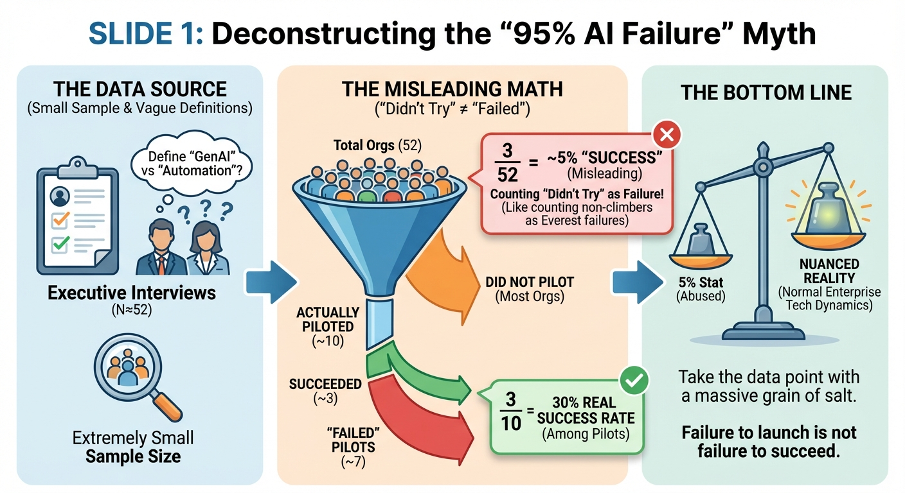
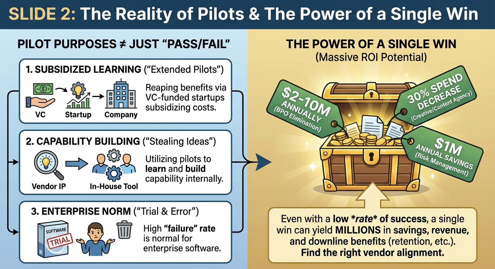

Only 20% of organizations actually piloted! With 52 total orgs in sample: ~10 actually piloted task-specific tools (most didn't try), ~3 succeeded (30% success rate among those who tried)
3 out of 52 (5%) sounds dramatic, yet the real number is 3 out of 10
The data is derived from ~50 executive interviews — an extremely small sample size
No telling how executives defined "GenAI" themselves. AI "initiatives" can have very broad definitions — many people actually mean "automation" when they say "AI"
Have you ever talked to executives so removed from their teams that they misreport? I know I have...
Slide 2 of 4

Speaker Notes
They're counting "didn't try" as "tried and failed."
It's like claiming "95% of Americans failed to climb Mount Everest" while counting everyone who never attempted it as a failure
This is completely normal for enterprise software — most initiatives don't make it past investigation
The real success rate among those who actually piloted: ~30%
Slide 3 of 4

Speaker Notes
Having seen and been part of (via a failed startup) GenAI changes in freight, pilots have interesting definitions and purposes depending on the company:
Subsidized learning: Many companies reap enormous financial benefits through "extended pilots" where VC-funded startups subsidize costs
Capability building: Many companies utilize pilot stages to "steal" ideas and build capability internally
There ARE meaningful gains — the report cites this:
BPO elimination yielded $2-10M annually
30% spend decrease in creative/content agency work
$1M annual savings via financial services risk management